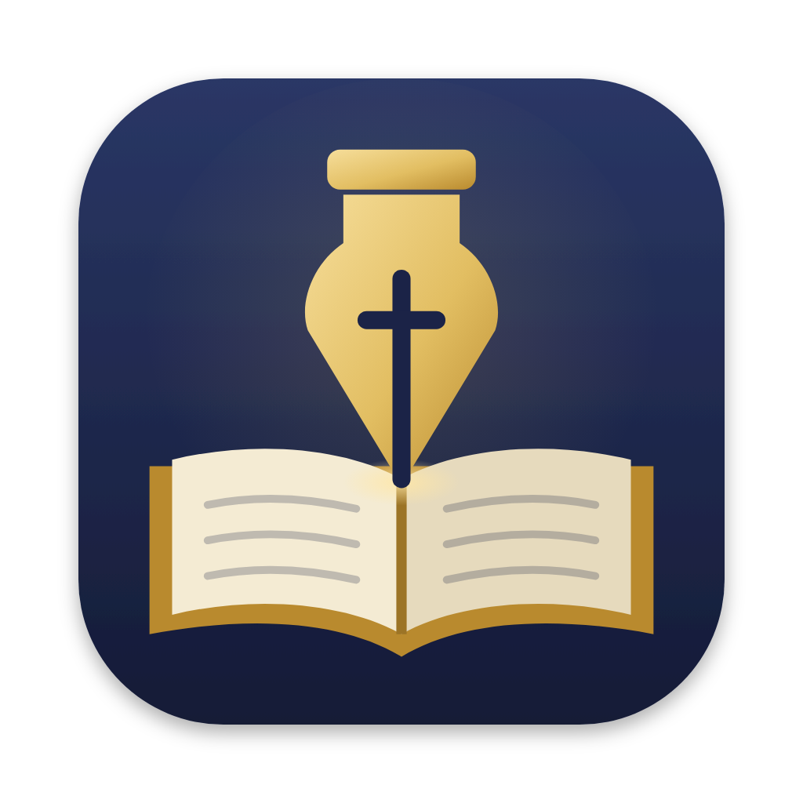

어떤 본문으로, 어떤 제목과 내용으로, 어디에서 설교했는지 — 66권 위에 기록하고 준비하는 설교 노트
SermonROAD.zip을 풀고 SermonROAD를 응용 프로그램 폴더로 옮겨요. 그래야 자동 업데이트가 돼요.
처음 열 때 경고가 뜨면 시스템 설정 → 개인 정보 보호 및 보안 맨 아래 “그래도 열기”.
설정에서 섬기는 교회 이름(기본 장소)을 적고, 주석 · 강해 PDF 가 든 서재 폴더를 골라요.
앱에서 바로(API 키, 쓴 만큼 요금) 또는 지금 쓰는 구독으로(복사해서 붙여 넣기). 언제든 바꿀 수 있어요.
같은 본문으로 같은 장소에서 설교한 적이 있으면 기록하는 화면 위에 알려 드려요. 본문 옆 HOLYBIBLE에서 열기를 누르면 그 장이 열려요. 성경 본문은 쓰시는 번역본으로 직접 붙여 넣어요.
① 본문을 적고 서재에서 찾기 → 서재 PDF 에서 그 본문을 다룬 쪽들을 찾아요 (스캔한 PDF 도 맥이 글자를 읽어 둬요)
② 쓸 자료에 체크 → 탭(정리 · 요약 / 구조 / 묵상 / 설교 개요 / 개혁주의 관점)을 고르고 만들기
③ 결과의 칼빈 313을 누르면 그 쪽이 열려요. 자료 밖은 Claude 가 덧붙인 내용이라 꼭 확인하세요
④ 설교 기록에 저장 · 개요는 중심 명제 · 대지로 옮기기